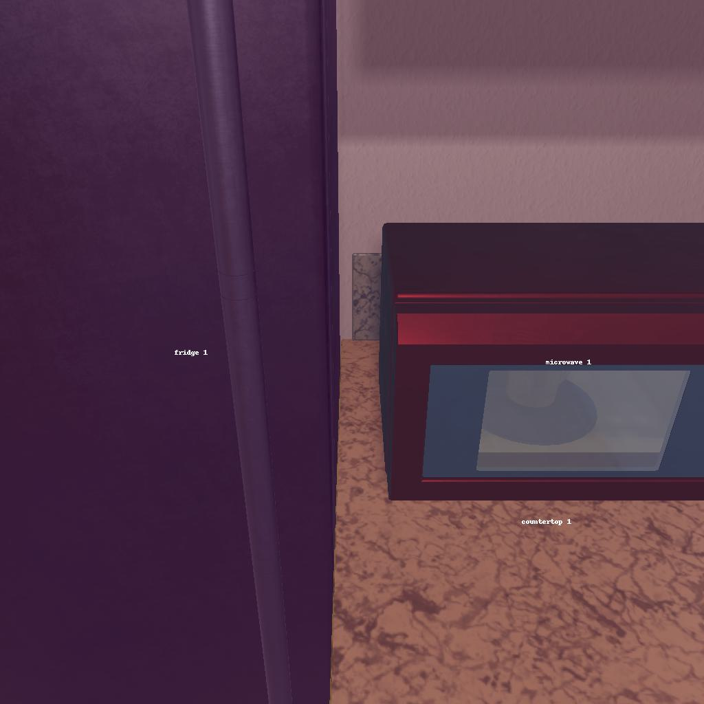

---------------------------------------------------------task: 18---------------------------------------------------------
--------------------------------------------------------------------------------------------------------------------------------------------------------------------
--------------------------------------------------------------------------------------------------------------------------------------------------------------------
Step:--------------------------------------------------------------------------5-------------------------------------------------------------------------------
----------------------------------------
VLM Prompt:
Image1:
**Instruction**
1. Analyze the provided image to identify all visible household objects, focusing on those relevant to the task description "cool some pot and put it in cabinet."
2. Use the analysis of the image and the task hint "The agent must find an object of the desired type, pick it up, go to a fridge, cool the object with the fridge, then find the correct location to place it, and put it down there. The agent does not need to use the fridge button or open the fridge to cool the object, and the agent just needs to do action that is "cool the object with the fridge"." to answer the question: what is the most reasonable action in the choices for the task description "cool some pot and put it in cabinet"?
4. Decide and write the answer using the template: The answer is: (i): , where i is the real number. If there is no desired object in the image, search every place based on **Initial Observation** to find the object. And if no one is exactly correct, choose a similar answer.
**Initial Observation**
You are in the middle of a room. Looking quickly around you, you can see cabinet (1-20), countertop (1-3), coffeemachine (1), toaster (1), sink (1), fridge (1), microwave (1), garbagecan (1), drawer (1-3), sinkbasin (1), stoveburner (1-4), shelf (1-3)
**Answer Choices**
(1): go to cabinet 1
(2): go to cabinet 2
(3): go to cabinet 3
(4): go to cabinet 5
(5): go to cabinet 6
(6): go to countertop 1
(7): go to coffeemachine 1
(8): go to cabinet 7
(9): go to toaster 1
(10): go to cabinet 8
(11): go to sink 1
(12): go to microwave 1
(13): go to garbagecan 1
(14): go to cabinet 9
(15): go to cabinet 10
(16): go to countertop 2
(17): go to cabinet 11
(18): go to cabinet 12
(19): go to drawer 1
(20): go to countertop 3
(21): go to drawer 2
(22): go to cabinet 13
(23): go to sinkbasin 1
(24): go to cabinet 14
(25): go to drawer 3
(26): go to stoveburner 1
(27): go to stoveburner 2
(28): go to stoveburner 3
(29): go to cabinet 15
(30): go to stoveburner 4
(31): go to cabinet 16
(32): go to cabinet 17
(33): go to cabinet 18
(34): go to cabinet 19
(35): go to cabinet 20
(36): go to shelf 1
(37): go to shelf 2
(38): go to shelf 3
(39): open fridge 1
(40): close fridge 1
(41): examine fridge 1
**Answer**
Let's think step by step by following the instructions.
----------------------------------------
----------------------------------------
Original Response:
Firstly, the task is to "cool some pot and put it in cabinet."
- We need to find a pot, but there is no pot visible in the image provided. Based on the initial observation, we should search every place to find the pot.
- Once we find the pot, we need to cool it with the fridge. The fridge is labeled as "fridge 1" in the image.
- After cooling the pot, we should find a cabinet to place it in. There are multiple cabinets listed in the initial observation, but we do not see any specific cabinet in the image provided.
Based on the hint, the agent does not need to use the fridge button or open the fridge to cool the object; they just need to perform the action "cool the object with the fridge." So, we can ignore options (39), (40), and (41) which involve interacting with the fridge in a way that is not required.
Since there is no pot visible in the image and the initial observation indicates that we should search every place to find the object, the most reasonable action from the available choices is to find the pot first. None of the answer choices involve searching for a pot directly, but we can assume that the pot might be located on the countertop or in a cabinet, as these are typical places where pots are kept.
Considering all the information, the most reasonable action is to go to the countertop closest to the fridge to search for the pot, as this would be the most efficient way to complete the task. In the image, we can see "countertop 1" labeled, which is right next to "microwave 1", and this countertop is the closest to "fridge 1".
The answer is: (6): go to countertop 1.
----------------------------------------
----------------------------------------
>>> Refine Original VLM Response and Get Pure Action: go to countertop 1
----------------------------------------
-----------------------------------------------------------------
Running time: 17.00573182106018 seconds
Total Money: 6.207440000000003
-----------------------------------------------------------------
-----------------------------------------------------------------
Text Observation:You arrive at loc 6. On the countertop 1, you see a lettuce 1, a soapbottle 1, a mug 1, a pan 1, and a spatula 1.
-----------------------------------------------------------------
UNSUCCEED